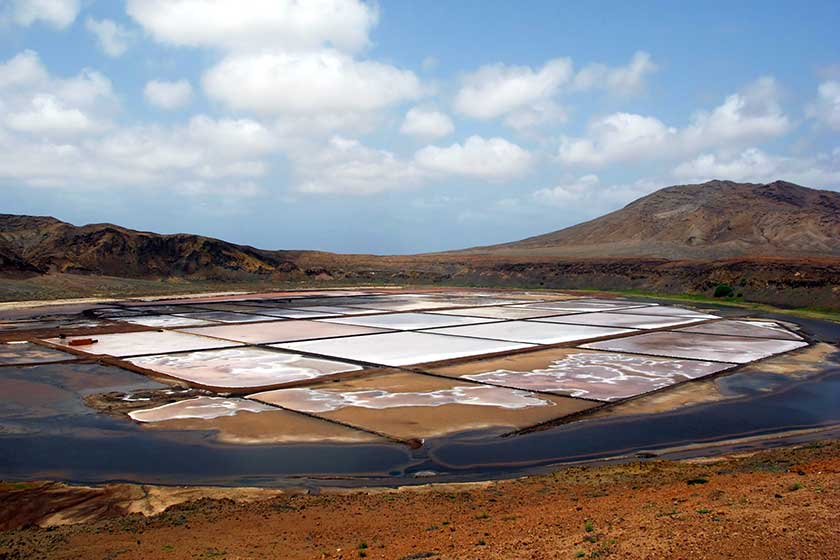
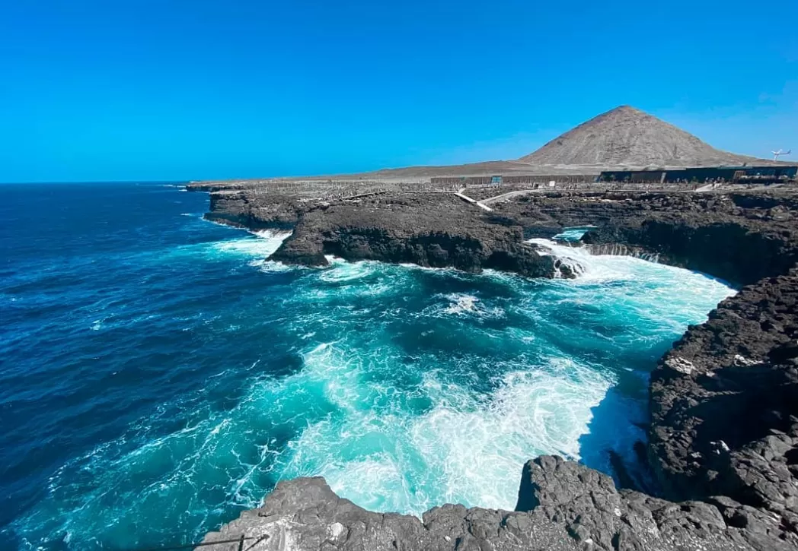
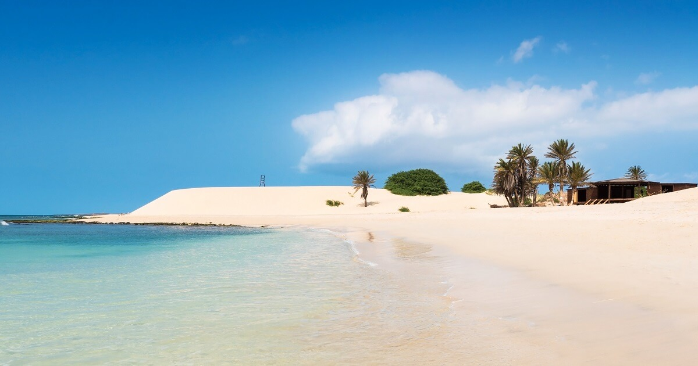
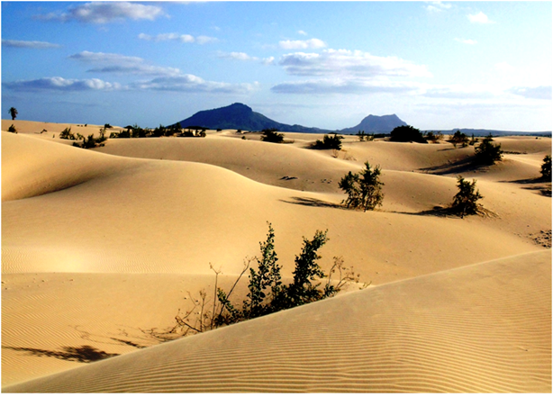
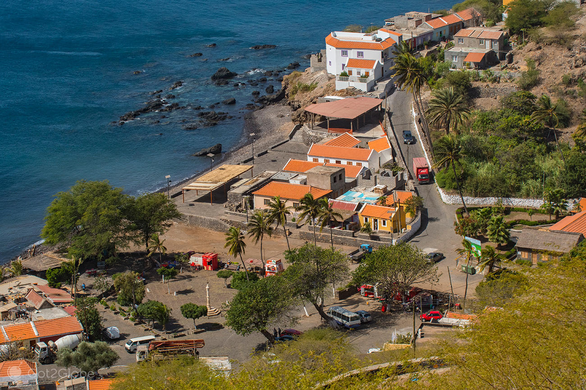
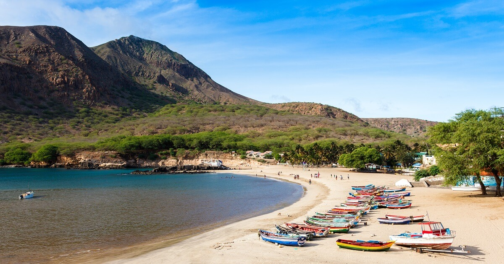

Turismo
PRINCIPAIS PONTOS TURÍSTICOS:
Ilha do Sal
Praia de Santa Maria
A ilha do Sal destaca-se por possuir a maior concentração de complexos turísticos do arquipélago, onde não faltam extensas praias de areia branca. A praia de Santa Maria é uma das mais conhecidas. De areia fina, e com mar calmo, dispõe de uma infraestrutura de apoio que inclui esplanadas e condições para a prática de desportos aquáticos. Aproveite para mergulhar nas águas transparentes e para fazer passeios ao longo da praia.
.jpg#/media/File:Unnamed_Road,_Santa_Maria,_Cape_Verde_-_panoramio_-_brunobarbato_(1).jpg)
Salinas de Pedra de Lume
As salinas de Pedra de Lume, situadas no interior da cratera de um
vulcão, são uma das principais atrações turísticas da ilha do Sal.
Aprecie as vistas e tome banho na lagoa de água salgada sem ir ao fundo.
Durante o banho, evite o contato da água com a boca e com os olhos, pois
pode arder. A entrada custa 5€. Por 1€, pode tomar um banho de água doce
após a experiência. Estão ainda disponíveis tratamentos de massagens
feitas com sal por um custo adicional.

Buracona/Olho Azul
O Olho Azul é outro dos grandes atrativos da ilha do Sal. Trata-se de uma
piscina natural com águas de cor azul-turquesa e uma caverna subaquática
com vários metros de profundidade, que resulta de reentrâncias provocadas
pelo mar na rocha vulcânica. O percurso para chegar à Buracona é algo
acidentado, pelo que é aconselhável levar calçado confortável para
caminhar.

Ilha da Boavista
Praia das Chaves
A ilha da Boavista possui 55 km de praias e pequenas enseadas entre
rochedos, onde é possível avistar tartarugas e baleias. A praia de Chaves
é uma das mais belas, e um dos cartões de visita deste destino. Com um
areal extenso e uma brisa suave a soprar durante o dia, esta praia convida
a longos passeios à beira-mar.

Deserto de Viana

Ilha de Santiago
Cidade Velha
A ilha de Santiago é a maior do arquipélago, e a primeira a ser descoberta
pelos portugueses em 1460. A Cidade Velha, outrora Ribeira Grande, é a
antiga capital do arquipélago, fundada em 1462. Da glória de então resta
um valioso património arquitetónico, classificado Património Mundial da
Humanidade pela UNESCO em 2009.
Nele se inclui a Rua da Banana, a primeira rua calcetada construída em
África, duas igrejas, o Forte de São Filipe, e o Pelourinho, frente ao
mar, onde se sucedem os restaurantes de peixe grelhado acabado de pescar –
o Tereru di Kultura é uma das nossas sugestões.

Praia
São apenas 14 km que separam Cidade Velha da cidade da Praia, a actual
capital de Cabo Verde. As principais atrações incluem os edifícios
históricos e o animado mercado, localizados no bairro central conhecido
como Plateau. Nesta pacata cidade, há ainda a morabeza. Este regionalismo
cabo-verdiano, que significa amabilidade e gentileza, captura como nenhuma
outra palavra a recepção calorosa da população cabo-verdiana de Praia.
Quanto à oferta de restaurantes, o difícil é a escolha. O Quintal da
Música é considerado um dos melhores.

Tarrafal
No extremo norte da ilha de Santiago, cerca de uma hora e meia de percurso, Tarrafal é simultaneamente o local da antiga Colónia Penal e de uma das mais belas praias de Santiago. A prisão foi instituída em 1936 pelo Estado Novo para receber prisioneiros políticos, funcionando mais tarde como campo de trabalhos forçados para os opositores ao regime. A visita ao Museu da Resistência do Tarrafal tem a duração de uma hora. Fora dos muros da prisão, a praia do Tarrafal é o lugar perfeito para relaxar. A praia de areia branca e águas transparentes a uma temperatura de 25ºC é uma das principais atrações turísticas desta ilha, e um dos melhores locais para praticar surf. Neste destino, aproveite também para saborear peixe fresco e cachupa nos restaurantes locais.

Ilha de São Vicente
A ilha de São Vicente é marcada pelo histórico porto de Mindelo. A cidade,
além de ser a mais cosmopolita de Cabo Verde, é considerada a capital
cultural do arquipélago, sobretudo pela sua tradição musical. Foi aqui,
nos animados bares com música ao vivo, que Cesária Évora iniciou a
carreira. Dois eventos anuais marcam a vida cultural da ilha, e são as
duas maiores festas de Cabo Verde: o Carnaval e o famoso Festival da Baía
das Gatas. A ilha de São Vicente é ideal para quem procura praia, diversão
e cultura.

Ilha Do Fogo
Pico do Fogo

Ilha de Santo Antão
A ilha de Santo Antão é a mais ocidental e uma das mais bonitas.
Caracterizada por um relevo montanhoso, vales e florestas, é a ilha ideal
para fazer trekking, oferecendo uma vasta rede de trilhos, onde são
possíveis diversas combinações de percursos e graus de dificuldade.